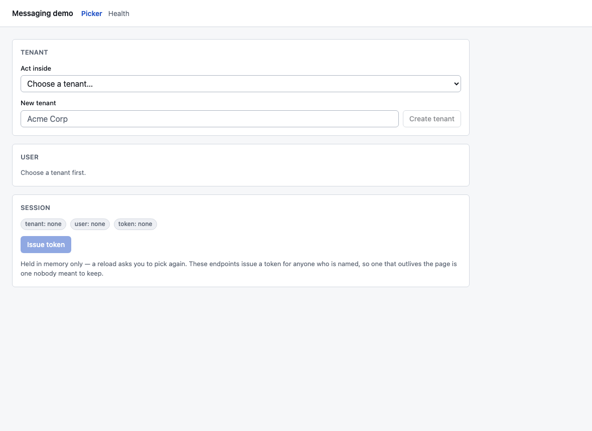
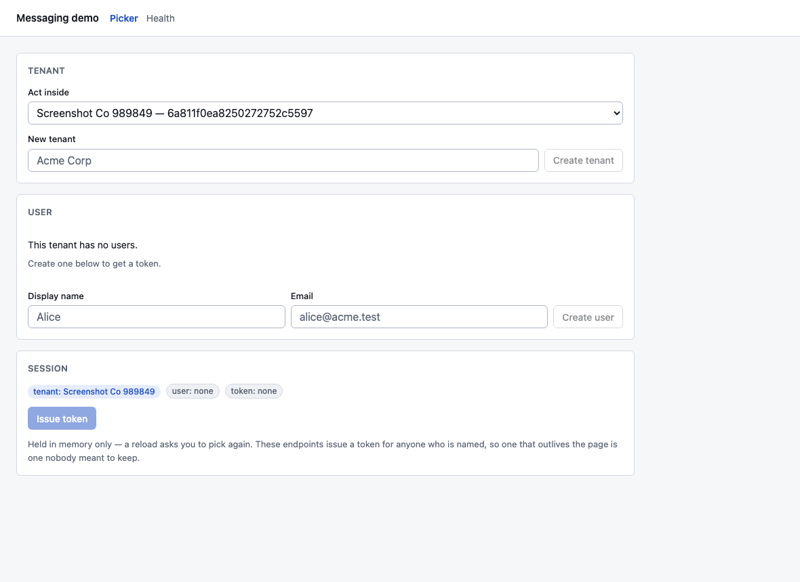
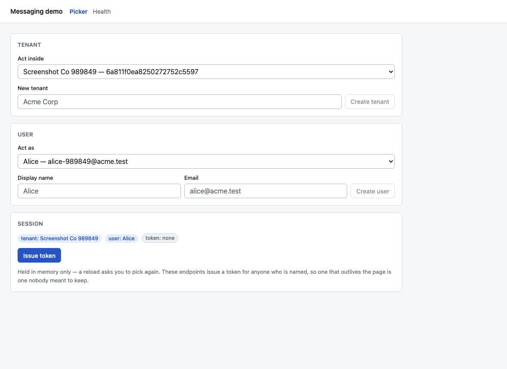
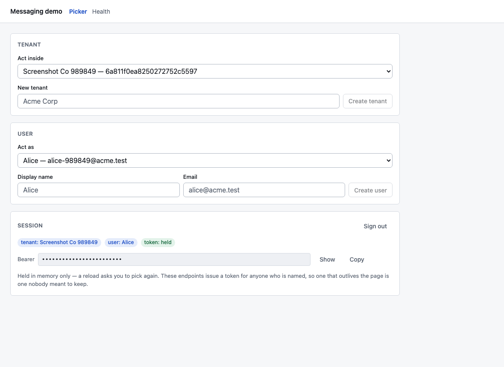
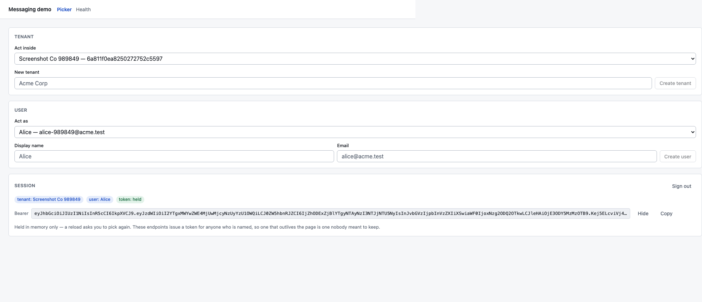
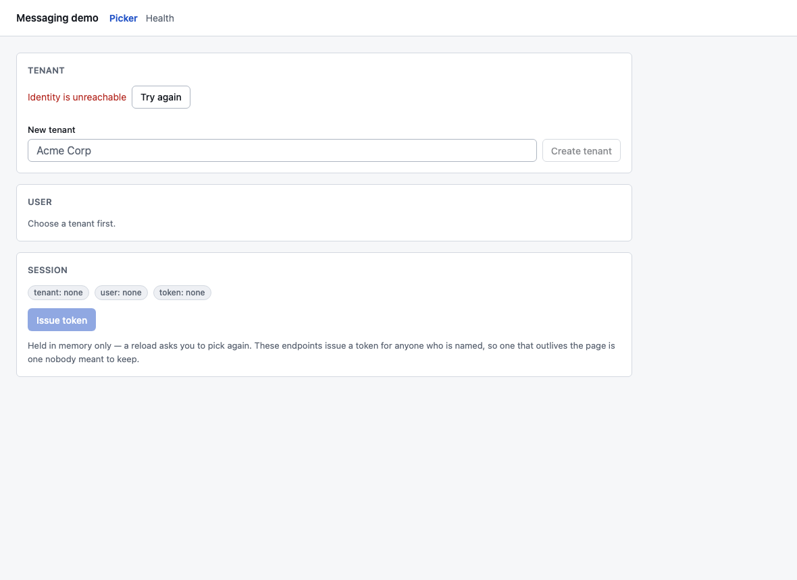
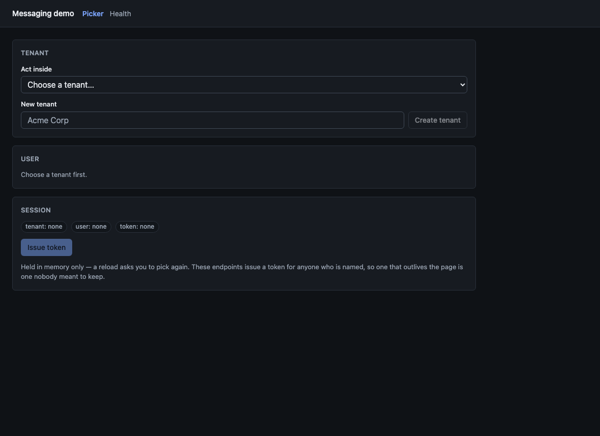
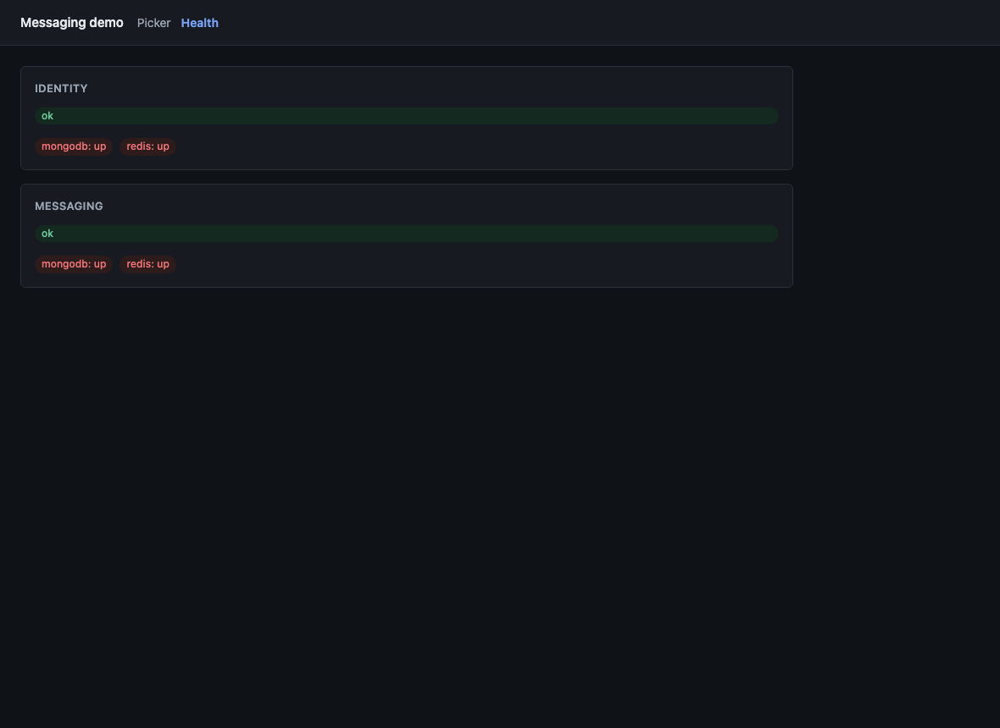
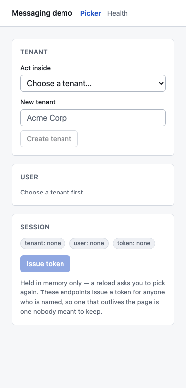

Every screenshot below was taken by a real Chromium driving the
demo-ui container, not the dev server — what a reviewer opens
is the nginx image, and the two differ in the proxy prefixes that have
already caught this project out once.
They are the output of assertions, not a separate exercise: each one is
taken at a point the test has just proved something about, so a shot that
stops being possible fails the run rather than quietly going stale.
Regenerate with pnpm ui:e2e && pnpm ui:review from the
repository root, with the stack up.

Nothing chosen yetThe landing state. The user card refuses to guess — it says to choose a tenant first, because listing users needs one.

A tenant with no usersCreating a tenant selects it, and the empty user list says what to do next rather than showing a blank area. Behind this, identity has already published identity.tenant-created.v1 and messaging has provisioned the tenant’s search alias.

A user to act asEach option carries its email, because two people called Alice is the normal case and an opaque id is not a choice anyone can make.

A token, maskedThe badges say what is held. The token is masked by default: a screenshot of this page, or a shoulder behind it, should not be a credential leak.

Revealed and copyableShown on request. Truncated on screen, whole in the clipboard — what you copy is never less than what you were shown.Reload, and it is goneHeld in memory only. These endpoints issue a token for anyone who is named, so one that survives a reload is one nobody meant to keep.

Identity unreachableThe state nobody clicks through by hand, which is why it is the one that ships broken. The message is the server’s own, and there is a way back.LightTokens are defined light-first and swapped under prefers-color-scheme.

DarkLifted, desaturated accents rather than the light values inverted — the same hue at full saturation on a dark surface vibrates and loses contrast.Health, darkBoth services through the one proxy. The status is a word as well as a colour.

Health, lightThe same page in the other theme, checked rather than assumed.

375pxThe rows wrap instead of scrolling sideways. The test asserts that too — scrollWidth may not exceed clientWidth.